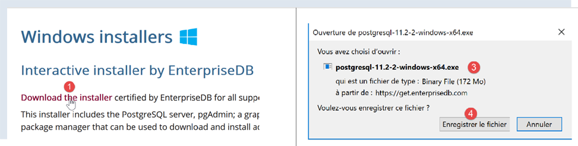
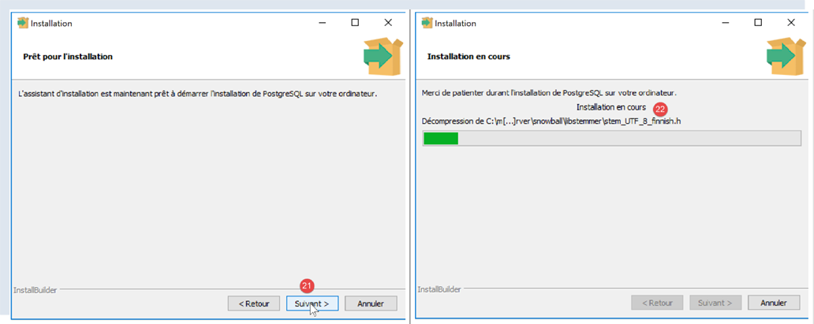
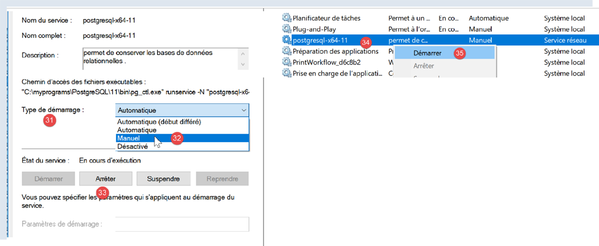
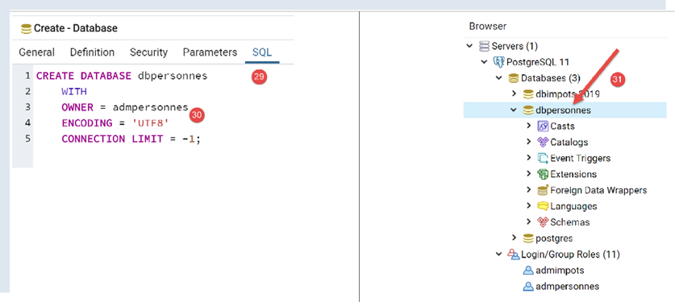
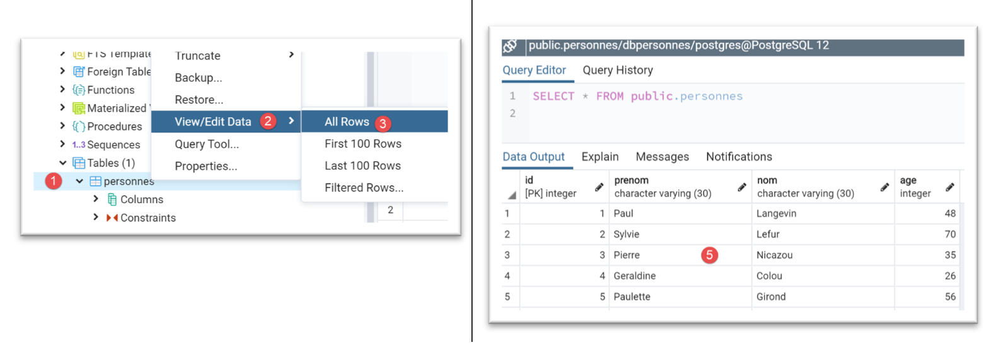

17. Utilizzo di SGBD e PostgreSQL
Il SGBD PostgreSQL è disponibile gratuitamente. Rappresenta un’alternativa alla versione «community» di MySQL.
Lo utilizziamo qui per dimostrare che è abbastanza semplice migrare dagli script Python / MySQL agli script Python / PostgreSQL.
Con SGBD e MySQL, l’architettura dei nostri script era la seguente:
Con SGBD e PostgreSQL, sarà la seguente:

17.1. Installazione di SGBD PostgreSQL
Le distribuzioni di SGBD e PostgreSQL sono disponibili a partire dalla versione URL e [https://www.postgresql.org/download/] (maggio 2019). Di seguito illustriamo l’installazione della versione per Windows a 64 bit:


- in [1-4], si scarica il programma di installazione da SGBD;
Si avvia il programma di installazione scaricato:

- in [6], specificare una cartella di installazione;

- in [8], l'opzione [Stack Builder] non è necessaria per ciò che vogliamo fare qui;
- in [10], lasciate il valore che vi verrà proposto;

- in [12-13], qui è stata inserita la password [root]. Questa sarà la password dell’amministratore di SGBD, denominato [postgres]. PostgreSQL lo chiama anche «superutente»;
- in [15], lasciate il valore predefinito: è la porta di ascolto di SGBD;

- in [17], lasciare il valore predefinito;
- in [19], il riepilogo della configurazione dell’installazione;


In Windows, SGBD PostgreSQL viene installato come servizio di Windows avviato automaticamente. Nella maggior parte dei casi ciò non è auspicabile. Modificheremo questa configurazione. Digitare [services] nella barra di ricerca di Windows [24-26]:

- in [29]; si nota che il servizio SGBD PostgreSQL è in modalità automatica. Modifichiamo questa impostazione accedendo alle proprietà del servizio [30]:

- in [31-32], impostare l'avvio in modalità manuale;
- per [33], arrestare il servizio;
Quando si desidera avviare manualmente il servizio SGBD, tornare all’applicazione [services], fare clic con il tasto destro del mouse sul servizio [postgresql] (34) e avviarlo (35).
17.2. Gestire PostgreSQL con lo strumento [pgAdmin]
Avviare il servizio Windows SGBD PostgreSQL (paragrafo precedente). Quindi, allo stesso modo in cui è stato avviato lo strumento [services], avviare lo strumento [pgadmin] che consente di gestire SGBD, PostgreSQL e [1-3]:

È possibile che a un certo punto vi venga richiesta la password del superutente. Questa è [postgres]. Avete impostato la password durante l’installazione di SGBD. In questo documento, durante l’installazione abbiamo assegnato al superutente la password [root].
- in [4], [pgAdmin] è un’applicazione web;
- in [5], l’elenco dei server PostgreSQL rilevati da [pgAdmin], in questo caso 1;
- in [6], il server PostgreSQL che abbiamo avviato;
- in [7], i database di SGBD, in questo caso 1;
- in [8], il database [postgresql] è gestito dal superutente [postgres];
Creiamo innanzitutto un utente [admpersonnes] con la password [nobody]:


- in [17], abbiamo inserito [nobody];

- in [21], il codice SQL che verrà generato dallo strumento [pgAdmin] verso il SGBD PostgreSQL. Questo è un modo per imparare il linguaggio proprietario SQL di PostgreSQL;
- in [22], dopo la convalida da parte della procedura guidata [Save], è stato creato l’utente [admpersonnes];
Ora creiamo il database [dbpersonnes]:

Si fa clic con il tasto destro su [23], quindi su [24-25] per creare un nuovo database. Nella scheda [26], si definisce il nome del database [27] e il suo proprietario [admpersonnes] [28].

- in [30], il codice SQL di creazione del database;
- in [31], dopo la convalida da parte dell’assistente [Save], viene creato il database [dbpersonnes];
Utilizzeremo il database [dbpersonnes] con script Python.
17.3. Installazione del connettore Python di SGBD PostgreSQL
Nello schema sopra riportato è rappresentato un connettore che funge da collegamento tra gli script Python e SGBD PostgreSQL. Ne esistono diversi. Installiamo il connettore [psycopg2]. L’operazione va eseguita in un terminale Python (indipendentemente dalla cartella in cui è aperto il terminale). Il connettore viene installato tramite il comando [pip install psycopg2]:
(venv) C:\Data\st-2020\dev\python\cours-2020\python3-flask-2020\troiscouches\v01\tests>pip install psycopg2
Collecting psycopg2
Downloading psycopg2-2.8.5-cp38-cp38-win_amd64.whl (1.1 MB)
|| 1.1 MB 3.2 MB/s
Installing collected packages: psycopg2
Successfully installed psycopg2-2.8.5
17.4. Conversione degli script MySQL in script PostgreSQL

- la cartella [1] degli script MySQL viene duplicata (Ctrl-C / Ctrl-V), quindi i nomi dei file vengono modificati in base al loro contenuto;
17.4.1. modulo [pgres_module]
Questo modulo è una copia del modulo [mysql_module] (cfr. paragrafo |script [mysql-04]: esecuzione di un file di comandi SQL|). Si modificano le importazioni:
Invece di:
# importazioni
from mysql.connector import DatabaseError, InterfaceError
from mysql.connector.connection import MySQLConnection
from mysql.connector.cursor import MySQLCursor
si scrive:
# importazioni
from psycopg2 import DatabaseError, InterfaceError
from psycopg2.extensions import connection, cursor
La firma della funzione [afficher_infos] era:
def afficher_infos(curseur: MySQLCursor):
Diventa:
def afficher_infos(curseur: cursor)
La firma della funzione [execute_list_of_commands] era:
def execute_list_of_commands(connexion: MySQLConnection, sql_commands: list,
suivi: bool = False, arrêt: bool = True, with_transaction: bool = True)
Diventa:
def execute_list_of_commands(connexion: connection, sql_commands: list,
suivi: bool = False, arrêt: bool = True, with_transaction: bool = True):
Per il resto non cambia nulla.
17.4.2. script [pgres_01]
Lo script [pgres_01] è una copia dello script [mysql_01] (cfr. paragrafo |script [mysql-01]: connessione a un database MySQL - 1|). Vi si apportano le seguenti modifiche:
Invece di:
# importazione del modulo mysql.connector
from mysql.connector import connect, DatabaseError, InterfaceError
si scrive:
# importazione del modulo psycopg2
from psycopg2 import connect, DatabaseError, InterfaceError
Il resto rimane invariato. I risultati sono gli stessi di quelli ottenuti con MySQL.
17.4.3. script [pgres_02]
Lo script [pgres_02] è una copia dello script [mysql_02] (cfr. paragrafo |script [mysql-02]: connessione a un database MySQL - 2|). Vi si apportano le seguenti modifiche:
Invece di:
# importazione del modulo mysql.connector
from mysql.connector import DatabaseError, InterfaceError, connect
si scrive:
# importazione del modulo psycopg2
from psycopg2 import DatabaseError, InterfaceError, connect
I risultati non sono gli stessi di quelli dello script [mysql_02]:
Lo script [pgres_02] è il seguente:
# importazione del modulo mysql.connector
from psycopg2 import DatabaseError, InterfaceError, connect
# ---------------------------------------------------------------------------------
def connexion(host: str, database: str, login: str, pwd: str):
# effettua il login e poi il logout (login, password) dal database [database] sul server [host]
# genera l'eccezione DatabaseError in caso di problema
connexion = None
try:
# connessione
connexion = connect(host=host, user=login, password=pwd, database=database)
print(
f"Connexion réussie à la base database={database}, host={host} sous l'identité user={login}, passwd={pwd}")
finally:
# si chiude la connessione se è stata aperta
if connexion:
connexion.close()
print("Déconnexion réussie\n")
# ---------------------------------------------- main
# credenziali di accesso
USER = "admpersonnes"
PASSWD = "nobody"
HOST = "localhost"
DATABASE = "dbpersonnes"
# connessione di un utente esistente
try:
connexion(host=HOST, login=USER, pwd=PASSWD, database=DATABASE)
except (InterfaceError, DatabaseError) as erreur:
# viene visualizzato l'errore
print(erreur)
# connessione di un utente inesistente
try:
connexion(host=HOST, login="xx", pwd="yy", database=DATABASE)
except (InterfaceError, DatabaseError) as erreur:
# viene visualizzato l'errore
print(erreur)
Mentre le righe 36-41 avrebbero dovuto visualizzare un messaggio di errore indicando che la connessione a SGBD non era andata a buon fine, non viene visualizzato nulla. In realtà, approfondendo la questione, si nota che nelle righe 35-37 si passa effettivamente al [except], ma che la variabile [erreur] assume il valore [None]. Ciò si verifica con la versione 2.8.4 del connettore [psycopg2].
È possibile aggirare questo problema scrivendo un messaggio generico ma meno preciso:
# Accesso di un utente inesistente
try:
connexion(host=HOST, login="xx", pwd="yy", database=DATABASE)
except (InterfaceError, DatabaseError) as erreur:
# viene visualizzato l'errore
print(f"Erreur de connexion à la base [{DATABASE}] par l'utilisateur [xx/yy]")
I risultati sono quindi i seguenti:
C:\Data\st-2020\dev\python\cours-2020\python3-flask-2020\venv\Scripts\python.exe C:/Data/st-2020/dev/python/cours-2020/python3-flask-2020/databases/postgresql/pgres_02.py
Connexion réussie à la base database=dbpersonnes, host=localhost sous l'identité user=admpersonnes, passwd=nobody
Déconnexion réussie
Erreur de connexion à la base [dbpersonnes] par l'utilisateur [xx/yy]
Process finished with exit code 0
17.4.4. script [pgres_03]
Lo script [pgres_03] è una copia dello script [mysql_03] (cfr. paragrafo |script [mysql-03]: creazione di una tabella MySQL|). Vi si apportano le seguenti modifiche:
Invece di:
from mysql.connector import DatabaseError, InterfaceError, connect
from mysql.connector.connection import MySQLConnection
si scrive:
from psycopg2 import DatabaseError, InterfaceError, connect
from psycopg2.extensions import connection
Inoltre, la firma della funzione [execute_sql], che era:
def execute_sql(connexion: MySQLConnection, update: str):
diventa:
def execute_sql(connexion: connection, update: str):
Il resto rimane invariato. Il risultato è il seguente:
C:\Data\st-2020\dev\python\cours-2020\python3-flask-2020\venv\Scripts\python.exe C:/Data/st-2020/dev/python/cours-2020/python3-flask-2020/databases/postgresql/pgres_03.py
create table personnes (id int PRIMARY KEY, prenom varchar(30) NOT NULL, nom varchar(30) NOT NULL, age integer NOT NULL, unique(nom,prenom)) : requête réussie
Process finished with exit code 0
È possibile verificare la presenza della tabella [personnes] con lo strumento di amministrazione [pgAdmin]:

17.4.5. script [pgres_04]
Lo script [pgres_04] è una copia dello script [mysql_04] (cfr. paragrafo |script [mysql-04]: esecuzione di un file di comandi SQL|). Utilizza il modulo [pgres_module]:
# viene recuperata la configurazione dell'applicazione
import config_04
config = config_04.configure()
# il syspath è configurato - è possibile eseguire le importazioni
import sys
from pgres_module import execute_file_of_commands
from psycopg2 import connect, DatabaseError, InterfaceError
Il resto rimane invariato.
Si crea una configurazione [pgres pgres-04 without_transaction] come già fatto nel paragrafo |script [mysql-04]: esecuzione di un file di comandi SQL|. Allo stesso modo si crea una configurazione [pgres pgres-04 with_transaction].
L'esecuzione della configurazione [pgres pgres-04 without_transaction] fornisce i seguenti risultati:
C:\Data\st-2020\dev\python\cours-2020\python3-flask-2020\venv\Scripts\python.exe C:/Data/st-2020/dev/python/cours-2020/python3-flask-2020/databases/postgresql/pgres_04.py false
--------------------------------------------------------------------
Exécution du fichier SQL C:\Data\st-2020\dev\python\cours-2020\python3-flask-2020\databases\postgresql/data/commandes.sql sans transaction
--------------------------------------------------------------------
[drop table if exists personnes] : Exécution réussie
nombre de lignes modifiées : -1
[create table personnes (id int primary key, prenom varchar(30) not null, nom varchar(30) not null, age integer not null, unique (nom,prenom))] : Exécution réussie
nombre de lignes modifiées : -1
[insert into personnes(id, prenom, nom, age) values(1, 'Paul','Langevin',48)] : Exécution réussie
nombre de lignes modifiées : 1
[insert into personnes(id, prenom, nom, age) values (2, 'Sylvie','Lefur',70)] : Exécution réussie
nombre de lignes modifiées : 1
[select prenom, nom, age from personnes] : Exécution réussie
prenom, nom, age,
*****************
('Paul', 'Langevin', 48)
('Sylvie', 'Lefur', 70)
*****************
xx : Erreur (ERREUR: erreur de syntaxe sur ou près de « xx »
LINE 1: xx
^
)
[insert into personnes(id, prenom, nom, age) values (3, 'Pierre','Nicazou',35)] : Exécution réussie
nombre de lignes modifiées : 1
[insert into personnes(id, prenom, nom, age) values (4, 'Geraldine','Colou',26)] : Exécution réussie
nombre de lignes modifiées : 1
[insert into personnes(id, prenom, nom, age) values (5, 'Paulette','Girond',56)] : Exécution réussie
nombre de lignes modifiées : 1
[select prenom, nom, age from personnes] : Exécution réussie
prenom, nom, age,
*****************
('Paul', 'Langevin', 48)
('Sylvie', 'Lefur', 70)
('Pierre', 'Nicazou', 35)
('Geraldine', 'Colou', 26)
('Paulette', 'Girond', 56)
*****************
[select nom,prenom from personnes order by nom asc, prenom desc] : Exécution réussie
nom, prenom,
************
('Colou', 'Geraldine')
('Girond', 'Paulette')
('Langevin', 'Paul')
('Lefur', 'Sylvie')
('Nicazou', 'Pierre')
************
[select nom,prenom,age from personnes where age between 20 and 40 order by age desc, nom asc, prenom asc] : Exécution réussie
nom, prenom, age,
*****************
('Nicazou', 'Pierre', 35)
('Colou', 'Geraldine', 26)
*****************
[insert into personnes(id, prenom, nom, age) values(6, 'Josette','Bruneau',46)] : Exécution réussie
nombre de lignes modifiées : 1
[update personnes set age=47 where nom='Bruneau'] : Exécution réussie
nombre de lignes modifiées : 1
[select nom,prenom,age from personnes where nom='Bruneau'] : Exécution réussie
nom, prenom, age,
*****************
('Bruneau', 'Josette', 47)
*****************
[delete from personnes where nom='Bruneau'] : Exécution réussie
nombre de lignes modifiées : 1
[select nom,prenom,age from personnes where nom='Bruneau'] : Exécution réussie
nom, prenom, age,
*****************
*****************
--------------------------------------------------------------------
Exécution terminée
--------------------------------------------------------------------
Il y a eu 1 erreur(s)
xx : Erreur (ERREUR: erreur de syntaxe sur ou près de « xx »
LINE 1: xx
^
)
Process finished with exit code 0
- riga 5: è stato necessario modificare il comando di eliminazione della tabella [personnes]. A differenza del connettore MySQL, il connettore PostgreSQL genera un'eccezione se la tabella da eliminare non esiste. Il comando [drop table] ha una variante, [drop table if exists], che non genera un'eccezione se la tabella non esiste. In questo caso abbiamo utilizzato quest'ultima. Si tratta di un esempio in cui due comandi SGBD non si comportano allo stesso modo in situazioni analoghe;
La tabella [personnes] nello strumento [pgAdmin] è la seguente:

L'esecuzione della configurazione [pgres pgres_04 with_transaction] fornisce i seguenti risultati:
C:\Data\st-2020\dev\python\cours-2020\python3-flask-2020\venv\Scripts\python.exe C:/Data/st-2020/dev/python/cours-2020/python3-flask-2020/databases/postgresql/pgres_04.py true
--------------------------------------------------------------------
Exécution du fichier SQL C:\Data\st-2020\dev\python\cours-2020\python3-flask-2020\databases\postgresql/data/commandes.sql avec transaction
--------------------------------------------------------------------
[drop table if exists personnes] : Exécution réussie
nombre de lignes modifiées : -1
[create table personnes (id int primary key, prenom varchar(30) not null, nom varchar(30) not null, age integer not null, unique (nom,prenom))] : Exécution réussie
nombre de lignes modifiées : -1
[insert into personnes(id, prenom, nom, age) values(1, 'Paul','Langevin',48)] : Exécution réussie
nombre de lignes modifiées : 1
[insert into personnes(id, prenom, nom, age) values (2, 'Sylvie','Lefur',70)] : Exécution réussie
nombre de lignes modifiées : 1
[select prenom, nom, age from personnes] : Exécution réussie
prenom, nom, age,
*****************
('Paul', 'Langevin', 48)
('Sylvie', 'Lefur', 70)
*****************
xx : Erreur (ERREUR: erreur de syntaxe sur ou près de « xx »
LINE 1: xx
^
)
--------------------------------------------------------------------
Exécution terminée
--------------------------------------------------------------------
Il y a eu 1 erreur(s)
xx : Erreur (ERREUR: erreur de syntaxe sur ou près de « xx »
LINE 1: xx
^
)
Process finished with exit code 0
La tabella [personnes] nello strumento [pgAdmin] è la seguente:

In questo caso, il risultato è diverso da quello ottenuto con MySQL. Se si eseguono gli script nelle stesse condizioni, ovvero dopo aver eseguito lo script senza transazione, si ottengono i seguenti risultati:
- con MySQL, la tabella [personnes] è vuota;
- con PostgreSQL, la tabella [personnes] non lo è;
La differenza risiede nei diversi modi in cui questi due SGBD annullano la transazione:
- MySQL non annulla gli ordini [drop table] e [create table]. Ci si ritrova con una tabella [personnes] vuota;
- PostgreSQL annulla gli ordini [drop table] e [create table]. La tabella torna allo stato in cui si trovava prima dell'esecuzione dello script con transazione;
17.4.6. script [pgres_05]
Lo script [pgres_05] è una copia dello script [mysql_05] (cfr. paragrafo |script [mysql-05]: utilizzo di query parametrizzate|). Lo script viene modificato come segue:
Invece di:
# importazioni
from mysql.connector import connect, DatabaseError, InterfaceError
si scrive:
# importazioni
from psycopg2 import connect, DatabaseError, InterfaceError
Il resto rimane invariato.
I risultati ottenuti in [pgAdmin] sono i seguenti:

17.5. Conclusione
Il porting degli script MySQL agli script PostgreSQL è avvenuto piuttosto facilmente. Si tratta di un'eccezione. I due SGBD non supportano le stesse regole di denominazione degli oggetti di SQL (database, tabelle, colonne, vincoli, tipi di dati…), hanno estensioni SQL incompatibili… Per garantire un porting semplice, è necessario attenersi in entrambi i casi allo standard SQL senza cercare di utilizzare le estensioni proprietarie dei SGBD. Ciò va però a discapito delle prestazioni.